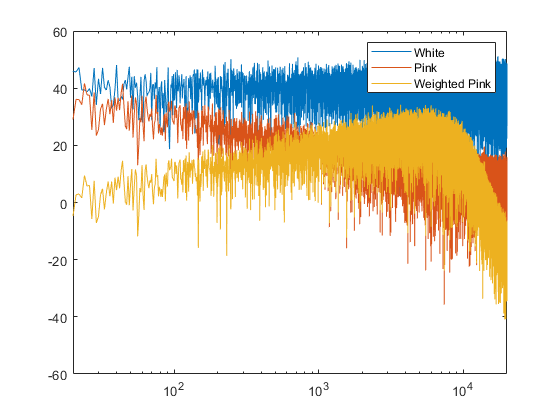
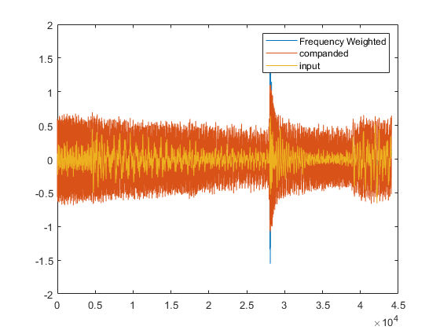

Thinking about the 2 issues of 1. signal to noise in diffusion being uneven across frequency causing and over-focus on low frequencies and an under-focus on high frequencies and 2. signal to noise in diffusion being uneven in relation to level leaving quieter passages under-focused and louder passages over-focused. I think I've got a solution to help this whilst still using the Gaussian white noise masker as was/is.
First, we can address the frequency domain with an emphesis curve using the R468 weighting curve, the inverse of which basically describes the toanl envelope of music because in a round about way we're mixing to invert that curve so the input as far as our ears is perceptually flat(ish) This should make the magnitude spectrum _closer_ to that of white noise. Worth noting I'm using pink noise here which generally doesn't decay quite as hard as music so looks slightly over emphasised. Also, overemphasis might be okay as we're attentive to the peak area anyway.
testNoise = pinknoise(44100,1); % make 1s pink noise % testNoise = audioread('LargePunchTest\16_122356.wav'); % testNoise = testNoise / max(abs(testNoise)); % testNoise = testNoise(65000+1:65000+44100); % cut out a 1s section S = fft(testNoise); % get spectrum mag = abs(S(1:size(testNoise,1)/2 + 1)); % get real mag spectrum phase = angle(S(1:size(testNoise,1)/2 + 1)); % get phase spectrum for later fbw = (44100/2) / (size(testNoise,1)/2 + 1); % bin widths fc = 0:fbw:fbw*(size(testNoise,1)/2); % bin centre frequencies figure semilogx(fc, 20*log10(mag)) % pink noise spectrum xlim([20 20000]) % w = 2595 * log10(1 + (fc/700)); % mel weight curve % w = 1 + (w / (w(1,1000))); % normalise weights by 1kHz w = ITUR468(fc); % ITU 468 weight curve figure semilogx(fc, 20*log10(w)) % weighting curve shape mag_w = mag .* w'; % weight the pink noise spectrum whiteNoise = (rand(44100,1) * 2) - 1; % make 1s uniform white noise for comparison wnS = fft(whiteNoise); % get spectrum white_mag = abs(wnS(1:size(whiteNoise,1)/2 + 1)); % get real mag spectrum figure semilogx(fc, 20*log10(white_mag)) % White hold on semilogx(fc, 20*log10(mag)) % Pink semilogx(fc, 20*log10(mag_w)) % Weighted Pink xlim([20 20000]) legend(["White" "Pink" "Weighted Pink"]) WS = mag_w .* exp(1i*phase); % get complex spect with weighted mag values WS(size(testNoise,1)/2 + 1 : size(testNoise,1)) = 0; % fill in the rest of the values prior to ifft y = ifft(WS,'symmetric'); % ifft for next step
Now do same frequency weigting on a sample from a song as the next bit requires something with dynamics
testNoise = audioread('LargePunchTest\16_122356.wav'); testNoise = testNoise / max(abs(testNoise)); testNoise = testNoise(65000+1:65000+44100); % cut out a 1s section S = fft(testNoise); % get spectrum mag = abs(S(1:size(testNoise,1)/2 + 1)); % get real mag spectrum phase = angle(S(1:size(testNoise,1)/2 + 1)); % get phase spectrum for later mag_w = mag .* w'; % weight the pink noise spectrum WS = mag_w .* exp(1i*phase); % get complex spect with weighted mag values WS(size(testNoise,1)/2 + 1 : size(testNoise,1)) = 0; % fill in the rest of the values prior to ifft y = ifft(WS,'symmetric'); % ifft for next step
After frequency weighting, we can use mu-law compansion (aka softclipping in music terms) to compress the dynamic range and make the dynamic envelope more even. PDF shows wider range and std which _i think _ shows gauss noise is masking sufficiently
% y is our frequency emphesised signal mu = 2^8-1; % standard here is 2^8-1 but this seems extreme. It's based on reducing the bit depth which i don't think we need to do companded = sign(y).*(log(1 + mu * abs(y)) / log(1+mu)); figure plot(y) hold on plot(companded) plot(testNoise) legend(["Frequency Weighted" "companded" "input"]) gauss = randn(44100,1); % gauss noise for comparison, m = 0 std = 1 % Compare PDFs figure histogram(gauss, 'Normalization','pdf') hold on histogram(companded, 'Normalization','pdf') legend(["gauss" "companded"])
Following synthesis, this encoding can be inverted losslessly.
iCompanded = sign(companded) .* ((((1 + mu).^abs(companded)) - 1) / mu); S = fft(iCompanded); % get spectrum mag = abs(S(1:size(iCompanded,1)/2 + 1)); % get real mag spectrum phase = angle(S(1:size(iCompanded,1)/2 + 1)); % get phase spectrum for later mag_w = mag ./ w'; % unweight the pink noise spectrum figure semilogx(fc, 20*log10(white_mag)) % White hold on semilogx(fc, 20*log10(mag)) % Weighted semilogx(fc, 20*log10(mag_w)) % Unweighted xlim([20 20000]) legend(["White" "Weighted" "Unweighted"]) WS = mag_w .* exp(1i*phase); % get complex spect with weighted mag values WS(size(iCompanded,1)/2 + 1 : size(iCompanded,1)) = 0; % fill in the rest of the values prior to ifft invertedProcessing = ifft(WS,'symmetric'); % ifft for next step % inverted processing nulls against original input figure plot(testNoise - invertedProcessing)
Function to generate the weight curve, you can ignore this
function r_itu = ITUR468(f) % Largely following https://github.com/cinelexi/itu-r-468-weighting/blob/master/itu_r_468_weighting/constants.py DB_GAIN_1KHZ = 18.246265068039158; FACTOR_GAIN_1KHZ = 10^(DB_GAIN_1KHZ / 20); f1 = f; f2 = f1.^2; f3 = f1.^3; f4 = f1.^4; f5 = f1.^5; f6 = f1.^6; h1 = ((-4.7373389813783836e-24 * f6) + (2.0438283336061252e-15 * f4) - (1.363894795463638e-07 * f2) + 1); h2 = ((1.3066122574128241e-19 * f5) - (2.1181508875186556e-11 * f3) + (0.0005559488023498643 * f1)); r_itu = (0.0001246332637532143 * f1) ./ sqrt(h1.^2 + h2.^2) * FACTOR_GAIN_1KHZ; end